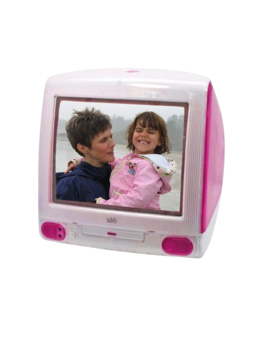
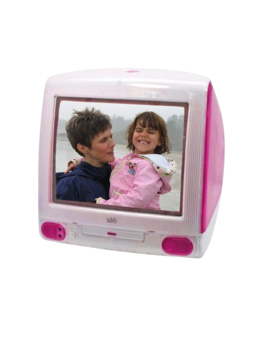
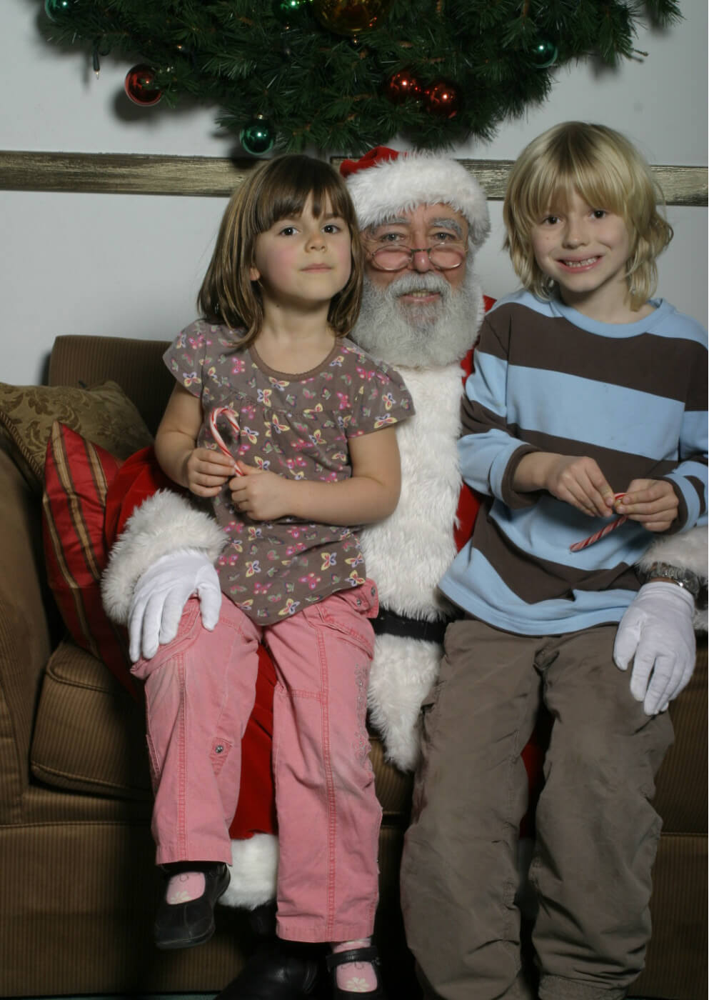

thursday, december 25th
3:54pm
all i want 4 christmas is to stop the brain fog and get off me iPhone!!!
i’m currently going down a youtube rabbit hole of videos discussing how to break phone addiction by replacing it
with things like a notepad, watch, alarm clock, iPod, camera, etc etc, which is v cool. in fact i’ve been down this
rabbit hole a couple times already.
i’m very loosely tossing around the idea of getting a flip phone…. the only issues i have with that are:
- i need google maps to know bus routes lol
- could i even still text my friends if they have iPhones? idk how that works
- i would need to pay for another phone plan
obviously i would not get rid of my iPhone, as it is still useful. like what if i’m drunk and out on the town and
need a way to get home? just using my iPhone to order an uber or catch a bus is much easier and accessible in such a
state. that’s the only scenario i can think of right now lol.
i did meet this girl a few months back who did have a flip phone, and i thought that was so cool. this guy from my
high school had one but at the time i thought it was dumb because he is super rich and it kinda came across like he
was cosplaying being poor or something idk.
this is a video i was watching today that i’ve seen a
few times already. i like his videos and it gets me inspired.
wednesday, december 24th
1:52pm
merry christmas eve from a girl sick in bed, messing around on her computer.
i had no idea what to get for my brother for christmas, but i was at the thrift a few days ago and found a deadmau5
t-shirt. we both used to be super big mega fans when we were kids (and still are).

2008? more like 2000 ate.
thursday, december 18th
4:30pm
this is the vibe i’m tryna emanate:

i should’ve been anthony from smosh circa 2006 for halloween this year. shoot.
the elderly cashier at value village said i looked gorgeous today
wednesday, december 17th
2:37pm
currently at my local library and working on this blog lol. emma (hi emma, this is ur shoutout, ur talking about
rotting bodies rn… it's for a class i swear) is actually doing school work but i’m just here to feel studious and
get out of the house.
i finally think i figured out how to set up my ipod shuffle!!! i’m so hype. it's the one the can clip on to ur
clothes too.
check out this graphic i made in like 2013 of when we first got our dog:

tuesday, december 16th
10:39pm


i write to you live from my parents home.
as of yesterday i took my last final and i am free from the shackles of academia for the next lil bit.
it was actually a really good semester. yesterday evening i came home and proceeded to info dump on my
parents about all the plant facts i’ve learned over the past few months. i love learning about plants and
nature and all that good stuff. next year i’ll be taking some rlly cool classes like fish class, and
wildlife ecology. sooooo hyped upppp!!!
i’m always on my phone in some way. well if not my phone, a screen of sorts is always turned on and playing
some sort of content.
this genuinely causes me extreme brain fog, like today, because the moment i don’t have to go to classes
and study, i’m on the damn phone.
like i’m on the damn phone and still doing other things (like this afternoon i was making pins!!!) but
it’s like a black hole, all consuming. always there. it feels like it’s near impossible to escape.
i wish i was joking.
i do get brief moments of true release, but i’m just so used to it’s presence that i’m still thinking
about it when i’m not on it, which freaks me out.
idk. i hate it. it’s not even instagram all the time, i’ll be watching a video, listening to music or
something, but it’s always on and in the background.
it doesn’t even feel good while i do it. only feels the best and fun in small increments.
idk i feel like i’m super hard on myself on this, but genuinely that’s what phones and screens are
designed to do.
they literally want u to keep watching forever.
i think to myself that people didn’t used to do this, but that’s not true because i’m sure people
would listen to the radio, or have something on the tv playing in the background while they did other
things.
i guess this has more of an effect when my days aren’t structured w activities. it’s harder to have
more self control that way.
idk. honestly i hate it XDXDXDXD HHAHHAHHA.......
side note tho, i found out my dad saw cocteau twins in concert once?? and mazzy star was the opener???
bruv.
dads just drop the craziest lore ever fr.
i think i’m gonna continue reading “braiding sweetgrass” for a bit and then hit the hay.
finals really forced me to fix my sleep schedule, weirdly.
goodnight gremlins.......
saturday, december 6th
6:06pm
my name is bing, last name bong.
i haven’t been able to get that out of my head so now it’s forever memorialized here in pixel land.
comparison is the absolute THIEF of joy. happy and then suddenly unhappy.
but i'm pretty darn happy.
soon studying will be over and i can do whatever i so please.
p.s. my top artist is CCR this year.
p.p.s. ben invited me to go back to hornby next summer (THANK U BEN!!!)

wednesday, november 26th
11:01am
my mum asked me what i wanted for christmas and i sent her a link to a button maker, and she immediately
ordered it and sent it to my place, so i got my christmas present like a week ago which is dope but also
silly.
hyped up for winter break. i’m free from the shackles of academia after like 3pm on december 15th. the grind
is getting real. i was at school from 10am-12am yesterday ahhhhhhh (yes, 14 hours).
crazy how i’m gonna kinda miss math. my prof is so silly. i also got an 80% on my midterm LFGGGG #partyrock
a girl just came up to me and said she really loved my style. YAY! i’m very green today: green pants, green
jacket, green scarf, green bag.
for christmas i may get a plant for myself, specifically, alocasia zebrina (zebra planttttt). it’s so
cuteeee. i remember at my old job when i was like 16 we had one at the till and i thought it was awesome,
and yesterday we had it in plant lab and i was reminded of its existence.
saturday, november 15th
5:32pm
yesterday i had my second math midterm, and i think i did pretty good. don’t wanna jinx it but… that’s the
truth.
this morning i dropped tor off at band practice and i made a detour to the bog to ponder in the peaceful
silence. much needed after last nights events (moshing too hard in the jazz pit, and falling on my ass not
once, but twice). i took many a photo on my digi cam of the different mosses and plants. i told myself this
would count for me studying for my plant ID exam, but i don’t know how truly beneficial that was.


now it’s already dark outside, and i desperately need to finish memorizing the 54 indicator plants that i need to know by thursday AHHHHHH!!!!!
was a really good day. i’m grateful for friends, dancing, live music, and pick-me-up pizza after a successful mosh. i’m happyyyy yippeeee!
wednesday, november 12th
8:27pm
i look in the mirror when my braids are tossed behind my shoulders, only my short hair visible, and i see my younger self staring back at me. i barely remember being her, but as i once was her, the memories creep out.
when i catch this glimpse of recognition, i feel as though i should try and embody her, and let her come out. i wonder what she thought about?
probably about eating feta cheese straight from the container tbh.
i miss her.

sunday, november 9th

2:16 pm
do you ever go on instagram, and scroll for like 10 seconds and think “wow! i hate it here!” and yet continue to scroll? me just now, but also everyday.
i don’t have the actual app on my phone most of the time, as i’m just logged on to my account on my laptop, which i find does help with spending less time on the app, but that hasn’t solved the issue that well. comparison really is the thief of joy (or whatever they say), and it feels so lame to even feel that way ugh. so then i’m like, “oh i’ll just block myself from seeing this person’s posts and stories,” but then at that point i have to ask myself why i’m even following them if i feel the need to do that?? it’s not like this girl i met a few times in grade 10 will be mad at me if she somehow were to notice that i didn’t follow her anymore, like be ffr.
anyways ben just joined me at the library, so i should get off on the social media plane anyways. time to do integrals…..
p.s. my math prof emailed us at 4am today saying that he just posted practice problems for the upcoming midterm. like dude, thank you so much, but get some sleep!! he’s too nice for this world.
saturday, november 8th
8:53pm
i love love love taking photos, and documenting memories.
if i had no shame i would take even more photos, especially of strangers. strangers are cool and they do cool things all the time, and my soul so deeply desires to take the perfect snapshot, but i don’t usually, in fear of seeming creepy.
i admit that i have a folder on my phone of pictures of strangers just being themselves, living their lives, whether that be two friends sitting in front of a cafe window drinking coffee, a woman analyzing a painting, a couple reading their respective books by the stream, or a child curiously inspecting the ground. there is something magical about people living their own little lives. it’s somehow comforting. honestly people watching is a great pass time too.
i’m very grateful for my mental health being so good atm. this time last year i had a pretty dramatic episode, and it felt as though i was going crazy for a bit there.
a pattern i’ve noticed, is that about once every year or so i go through a rough patch, but honestly, that is in no way a unique experience.
i’d say that 90% of the time that i’m like, super good, even if nothing “amazing” is happening. you know? i just feel #blessed i guess lol. i just know that for others this is really not the case, so i guess i’m just trying to say that i’m lucky to be in a good headspace most of the time.
i say this, but watch as finals season encroaches upon me, and the mental health graph tanks. but pain is temporary, enjoying silly things is 4evaaaaaaa!!

tuesday, november 4th
5:10pm
i keep glancing out the window as i cook dinner, thinking that surely it must be 7pm, but nope. not even technically dinner time yet. fuck november!!! i hate u bring the sun back.
here is a typical morning for ani:
-wake up and stare at nothing for like 2 minutes to fully wake up
-put on my big shirt to go pee
-put on sunscreen and deodorant
-make mint tea
-go back up stairs with my tea and sip it as i do my makeup, get dressed, and accessorize
-go downstairs and make some sort of breakfast (today it was more like lunch, so i had a grilled cheese with tomato soup, some cucumber, and an orange)
-put the dishes away and brush my teeth
-head back upstairs to pack my bag and put on a jacket
-come downstairs to put my shoes on and head out the door
-get my bike from the shed
-bike to da bus stop and catch a ride to class
writing this made me realize how many times i walk up and down the stairs. damn.
i just finished making dinner. i think i’m gonna eat, and then head to the library to study? i really don’t want to venture out into the cold and darkness, but i’ve been super unproductive at home lately.
friday, october 31st
11:20am
HAPPY HALLOWEENNNNIE!!!

in honour of today i wanna talk about my favourite things ever that i think about at least a few times a year: ispy spooky mansion.
does anyone know what i’m talking about? i used to play this game religiously with my friend in her basement on the wii. so many fun memories playing this. we were probably like 7-8 years old when we were playing it the most.
this game honestly felt like a fever dream, but one day i decided to look it up and i found it. apparently it was released in 2010, and its just a game that involves looking for things and solving puzzles, with the best host ever, skelly!!!
i would be her for halloween, but everyone would just think that i was just regular, boring skeleton.. smh. anyways, here is a little video of some game play, check it out if you want some spooky 2010s nostalgia.
wednesday, october 29th
5:19pm
omg halloween is so so so so closeeee! which is so awesome and fun but that also means that october is almost over, and it makes me remember that it won’t be another year until i can live in october again, you know?
i’m kinda lucky this year, considering i can fully appreciate halloweekend without worrying about how i should be studying, since my next midterm isn’t until november 14th. bro it’s for math tho, and math is getting serioussss ugh.
today my prof was explaining integrals, and i kept thinking about how it was like watching someone explain a conspiracy theory. like yes this stuff is all true, but it’s crazy how someone figured this all out. imagine being so big brained you invent integrals??? brah.
anyways, i’m working on related rates which is HARD, so i’m gonna lock in today and tomorrow, but the rest of the weekend is kind of a write off.
i’m excited to see tor play in they banddd w zach and others. #first show ever. gonna be crazy town.
pls wish me luck w my studies…. into the trenches i go.
sunday, october 26th
4:57pm

look here for today's find:


saturday, october 25th
12:13pm
went to bed last night at 3am because we watched rocky horror picture show at the rio. first time seeing it, it was a journeyyy. i did highkey fall asleep for the last little bit. i did dress up as frank n furter, and i was getting high school bullied by tor for dressing up as them even tho I’ve never seen the movie. sue me!!!
the other day i biked to my lab thru pacific spirit, and it was so beautiful and wonderful, so autumnal with all of the orange leaves. it is sick that i can actually recognize the indicator plants that i’m learning about in ecology! i feel like my babi when i can recognize things in nature… slowly becoming her hopefully.
today the plan is to finally go grocery shopping because i got my car back! me and ava bussed all the way to nvan to pick it up from my parents, where we stayed for dinner, and then drove home. she so kindly let me borrow her shoes for my costume too (luv u ava xo). i wanna make either my classic potato soup or tomato soup which i haven’t made this fall season yet. oh i also really wanna make jammy eggs, but more realistically i’m gonna make tor make some for me.
wednesday, october 22nd
9:51pm
quote of the day is: “you have the pinterest of a fucking wizard”
feeling: tired.
i have a plant biology midterm on friday which is so cool and fun and real and important, and i have actually been studying for it everyday since last friday, but i’m feeling burnt out by it, and i’m not quite satisfied with how much i know yet. there are one billion terms in botany to know, go figure. but it’s still a lot ok! and there’s nothing i hate more than sitting down for hours, for days in a row, just memorizing things. it drive me nuts (or should i say fruits, because erm technically nuts are a type of dry indehiscent fruit hahaahahhah. plants….)
also, i remember when we were learning about nuts a few weeks ago, my prof mentioned how cashews come from a fruit, and i immediately was transported back in time to this video. does anyone else remember this? buh.
and lowkey i be feeling so behind now that midterms are happening, because at the start of the term i was making flashcards after every class AND doing every reading AND staying on top of math practice problems, but i fear that has all slipped away.
what am i supposed to do? stay up until 3am doing it all? frick no.
anyways, i’m lowkey getting worked up but it’s also 10pm which means it’s nighttime, and my mummy always says to “never believe anything about your life past 9pm” and that’s something to truly live by. i know i’ll feel better after some sleep. gah.
i wanna add an about me section to my magical bog, but that’s a work in progress, so for now, here are some of my current interests:
-pins
-wildlife (especially birds and fish, but rlly anything at all, every critter ever!)
-yerba mate, but lately as hot tea in the mornings
-my bike
-how trees talk to each other thru the internet hidden in the soil (aka mycelium networks)
-racoon tails
i wrote all of that and realize that i’m choosing the things that will sound the coolest to the person on the other side of the screen (hello you). these are all true things, but let me list some more “ugly” interests:
-figuring out wtf to eat so i’m not hungry 24/7
-what are some good snacks to bring to school so i’m not completely delirious during class
-on second thought, these are more like thoughts instead of interests, lol.
i’ll stop there lol. i should go to bed after i post this. the plan for tomorrow is to wake up early, study, bike to my ecology lab, bike home, maybe nap, study some more, and then get in some spooky attire and go to koerners to see wishbone asf.
goodnight gremlins of the night.

tuesday, october 21st
10:53am
this morning i woke up early just to finally clean my gnome home. i’ve been so very busy with studying for midterms, it’s as though the “grind never stops” or something. me when i transfer into sciences and i’m surprised that there is more studying to do Ö !!
so i don’t have class until 12 today, which means tuesday’s i usually sleep in, but i got up at 8:30am to dust, vacuum, take out the trash, and start a load of laundry. oh, and i decided it’s about time i washed my sheets, so i’m currently laying on my naked bed. dude yesterday i fully forgor my bike at school, and i’m absolutely praying she’s still there. i’ll update you guys on whether or not she was kidnapped over night. would be devastating…
i feel as though i have so much to do, but not enough time. or, i do have enough time but i’m simply not a machine; i am in fact a sack of flesh and bones that needs her rest.
i think i wanna try and add a gallery section on my site, which i was planning on doing anyways, but i need many hours to be able to sit down and do so, which i don’t have the time for right now! i must study plants and calculate math equations instead. i’ll do it at some point, so keep your peepers peeled.
alright i must go get dressed, eat, and (hopefully) retrieve my bike before my tree lab :p
so long and farewell.
11:48am
bike was found! hooray!!!
friday, october 17th
11:46am
hello internet surfers. i think i finally figured out how to use github and deploy my site to neocities. damn that was a lot. now i can blog, and blog, and blog!!!! stay tuned for more more more :P c:
check out this lil graphic i made:

friday, october 3rd
9:52am
i'm about to walk into math so sleepy, but it's october third! and you know what that means:

wednesday, october 1st
10:30pm
first day of october!!!! but, also jane goodall died this morning. my ecology prof was so sad. RIP to the legendary monkey lady.
friday, september 26th
11:35am
hello worlddd what's gud? yesterday i went to koerners and this guy told me that i look like winona ryder. i think it's just the hair but i'll take that any day tbh.
wednesday, september 24th
9:32pm
yo learning to code is hard guys. no wonder ppl go to school and get a literal degree to learn this stuff. new site is the barest of bones rn.
however, i miss blogging. i've had a litty past few days. beautiful weather, making new friends, learning new stuff, and biking to and from school.
soooo crazy guys.